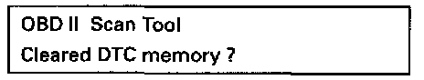
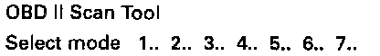
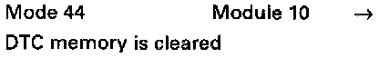

Clear DTC Memory, Mode 4
- Start engine and let idle. Press button -4- to select mode 4 clear DTC memory.NOTE:
DTC codes (if any are stored) must first be read before they can be cleared. Pressing button -4- will not clear the data in DTC memory immediately. In case of operator error, the control module will respond:

Display will appear as shown
By pressing the -C- button mode 4 will be exited.

Display will appear as shown
By pressing the -Q- button DTC memory will be cleared.

Display will appear as shown
NOTE:
When the -Q- button is pressed it can cause the engine to run irregularly until mode 4 is exited.
- Press -C- button to exit mode 4.
After repairing malfunctions and erasing DTC memory, the readiness code must be created. Then the readiness code must be interrogated via mode 41 transfer of diagnostic data. Readiness Code - Reading / Creating